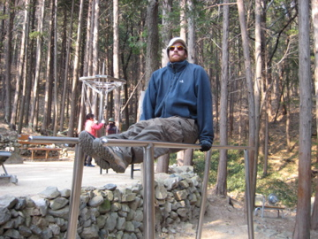
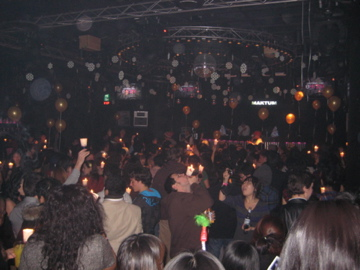
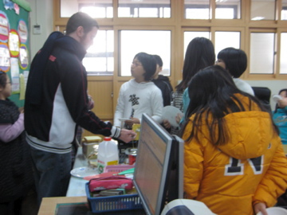
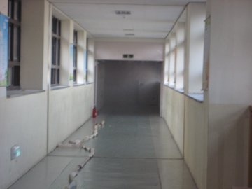
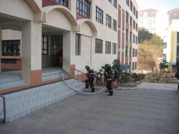

I’m three long days from the 90 degree weather of Thailand and Cambodia for one month. So I’ll wrap up the holidays and let you all in on a little story that kind of explains “what is Korea.” Before I get to the story, we did go on a hike last week (again) and it proved to be a beautiful one. The weather is a constant 45-55 degrees here through out the winter so there is ample time to hike even through the dead of the winter.Pretty much along every one of the hundreds of hikes on the dozens of mountains in my city, they have outdoor work out gyms where just in case, hiking doesn’t do it for you, you can pump some iron as well. I’ve made a few comments about ‘training for Rio 2016, that’s the summer olympics) and anyone who knows me, knows I, even though I hail from Chicago by way of Detroit, do not want the olympics in Chicago in 2016. My quick two cents on this race…
Chicago is in no way prepared to handle that amount of people in its city. The transportation system is simply a mess to put it nicely, the trains resemble a pre-WW2 era system and the buses have very few clean energy vehicles. Cyclists don’t have a shot in that city which is a shame because if they were given a decent shot, the city would thrive. It’s one of the fattest cities in the world (if the olympics are in the USA, at least have it in a place where pasty white rich people aren’t strolling from Saks to the Apple Store on Michigan avenue and calling it ‘exercise’)
{kind=link}
The main reason is this—I can’t help but feel that we have entirely ****ed over the world these past 8 years and in no way should we be rewarded for such activity. The U.S.A. had the olympics in Atlanta and Salt Lake in the past 14 years. There’s other places that deserve a shot. That is why I am supporting Rio for the olympics among other reasons, my love with Central and South America ranks very highly in that decision. Don’t worry Chicago, you’ll get your olympics, after all, Chicago politics is alive and well, but just remember what I am saying now (I’m talking to you French tourist) when you are sitting on the Blue Line and the conductor announces the train has broken down…C.T.A.= Can’t Transport Anybody…
moving on…
The hike was about 3 hours round trip. We ended up coming out on the totally wrong side of the mountain and had to take a taxi back to the apartment. Here are some random shots from the hike…
{kind=link}
{kind=link}
{kind=link}
I’ve had to do winter camps the past two weeks at school. That means I come in from 9am-Noon and just play games and do art projects with the kids. Here’s us after we made snowmen.Let’s see…holidays…we did a Christmas potluck and for New Years our aim was to stay up all night and watch the sunrise on Haeundae Beach. I guess it’s a typical Korean custom to watch the New Year’s first sunrise, and there’s no better spot than Haeundae beach. Anyway, we ended up at some club and spent the New Years Eve there dancing and drinking. We only made it until 5am and ended up sleeping most of the day January 1st.
The highlight of my week came in two different occasions, both scary, but eventually OK moments. The first was after I had bought some various groceries I was leaving the market along side a girl, maybe 15 years old. I stopped at the cross-walk but there was a large truck parked right on the crosswalk (personal injury lawyers are now composing the e-mail) so I could not see if any cars were coming. I slowly walked edged my way out to see if it was clear as the girl next to me darted out and BAM! smacked by a car. The taxi struck her and she flew up onto the roof and laid on the pavement for maybe 4 seconds. It was surreal and definitely the first time I had ever seen anyone struck by a car. The girl popped up and limped back in the market as the taxi driver chased her into the store to see if she was OK. (annnnnd personal injury lawyers have just swamped my e-mail inbox to get the girl’s name, damnit!)
{kind=link}
The second story is a bit more interesting and complex. I was holding my winter camp sessions where I do arts and crafts activities in English with 40 kids 5 days a week for three hours a day. We were making french toast (which the kids loved) when one of my students came in to tell me they “think bad smell” in the hallway. Teaching elementary school kids, I’ve learned to deal with the horrible smells and noises that come out of their bodies so I passed it off as nonsense.

Few minutes later two more students told me to go look. I headed up the stairs to the floor above us and definitely detected a faint smell of smoke. Well I opened the main doors to the hallway and this is what I saw… 
So immediately I had flashbacks to senior year of college at my house, but then realized I wasn’t in college anymore and I’d better do something quickly. This is where the hilarity ensues. I went back downstairs with the children to get my other Korean teacher in the classroom next to me. She then insisted on coming back upstairs to the smokey volcano about to go off upstairs with her 7 month pregnant unborn baby. I suggested this was a bad idea, but off we went. When we got up there, she proceeded to open every window until she started coughing and I took her by the arm and firmly said “let’s call fire department.” INSTEAD of calling the fire department, we go downstairs to notify a few male teachers. Well this is when I joined the Kaewon Elementary School Voluntary Fire Brigade.We come downstairs and the smoke has spread, this is now our view…
{kind=link}

then this…
{kind=link}
{kind=link}
so whats the next most logical thing to do? Forget the fire department, ya know, trained professionals who know how to put out fires and have gear that allow them to walk through smoke, we’re going to battle this thing ourselves! With our mini-hose! I really thought they might pull out the school’s pet hamster, attach a mini-camera on the hamster’s head, pat it on the ass, and tell it to go run reconnaissance, sending it right under the smoke into the inferno. (ok that’s a joke, but it wouldn’t have completely surprised me, actually, it would have, they love that hamster more than they like me—I think I once heard one student call it “better teacher Jared”) but i digress…

After numerous efforts to walk into the smoke (who knew Koreans couldn’t breathe in smoke either) after me saying fire department 7 or 8 times, they decided to make the dreadful call. The Busan Fire Department arrived quickly although part of me was afraid the principal of my school was going to stop them at the gate and say “Yes, we’re just going to need to borrow your truck for a few minutes.” But alas, they marched into the school in full gear, like scuba divers with giant hoses, breathing like aliens from their tanks and masks, right into that smoke. I thought to ask them where their Dalmatian was but I wasn’t sure I wanted to know the answer. (yes, they very much eat those here)Twenty minutes later, the fire was put out and I went to inspect the damage…
{kind=link}
{kind=link}
{kind=link}
This is where the story turns funny, if you know Korea at all. Back in my English Club class, the students are asking me about the fire and what it looked like, what was burned, etc. I gave them answers and one student raised his hand and said he saw the fire. I said oh that’s nice, thinking he meant from a distance. It turns out he was in the room with the student who started the fire in the empty classroom that morning. I immediately whisked him off to the upstairs area where there were 4 or 5 uniformed police officers and 2 detectives along with fire marshalls. I told one teacher (a prominent male elder teacher) what I knew and he whisked us both away from all the officials. He took my student into an office and only god knows what was said to him.Upon returning to the lounge, I was met by my co-teacher and same said elder teacher among other Korean teachers. My co-teacher, in the nicest way possible, told me that I was wrong and that it was an “electrical fire.” I said OK, and she added, “it is very important to your professional career that you remember it was an electrical fire and never comment on this again.” So the child who started the fire is back in school while two classrooms lay charred on the fourth floor. Obviously, it’s better that no one find out that our precious school has a delinquent in it. (sarcasm)
This story really brings me to final conclusions of the first part of my stay in Korea. My last day of the semester is today and I feel I owe some sort of wrap-up for my first semester living and working in Korea. I’m going to run you through my favorite things about Korea and my least favorite things. Let me preface this with, don’t write me damn e-mails saying I’m generalizing or stereotyping Koreans. I have many Korean friends and these are simply my observations from my 4.5 months here. I don’t know the reasons behind many of these actions and don’t pretend to think I could ever understand any of these behaviors. Like my friend Jason said, these are my own thoughts, not facts, just what I have felt from being thrown into a new culture for 4.5 months and I am comparing it to that of my own, there are no rights and wrongs.
Least Favorite Things About Korea:
1) Save Face at all costs! This is in reference to many stories like the fire one above. Koreans are deeply afraid of being embarrassed and must protect their reputation no matter the costs.
2) Seriously, it’s an escalator! OK people, when you get off an escalator, and it’s crowded, you can’t stop right at the top and look around for three minutes. It creates terrible problems. Keep walking! I know you didn’t have to move to get to that second floor but now you are at the second floor, and you have to move!
3) Close Minded– This may the case that Koreans are just extremely nationalistic and country-oriented, but I feel like many people here are close minded to other cultures and ideas. It is notoriously known Korea is a very racist (against Blacks and South Asians) country. They are very set in their ways. Very reluctant to hear other points of views or new ways of going about something. The fact that a city of three million people has only a handful (less than 5) of Thai, Vietnamese, and Indian places, when they are all so close, is rather disappointing.
4) It’s OK to cover your mouth when sneezing and coughing, really, its OK, no, I swear it’s OK.– For a country so afraid of germs and for people that wear masks all over the streets. If you cough on me in the States and I feel the air hit my face from your sick mouth, brother, we have problems. I’ve had numerous ‘cough-by’s now and they are terrible experiences.
5) Fashion and Appearance- Women wear extremelyyyyyy short skirts and shorts but would not dare to show any shoulder or neck. Just now allowed. I just find it funny, because when I say short skirts, I mean short skirts. I’d think it’d be the other way around. Men- Golly, I’m not sure what I think. Let’s just say I’ve mistaken maybe 40 Korean men for women since I got here. High school boys and middle school boys have all grown their hair out and are constantly grooming and combing each others hair. When I see a group of high school boys, I really worry about the future of Korea if things ever went horribly wrong with the North. I say this is in the most serious tone possible. I am genuinely worried. I deep down hope, that somewhere in Korea, is the Korea’s equivalent of the States’ “Texas good ol’ boys” ready to throw down at a moments notice and get “in the shit.” If not, gosh I don’t know. Mirrors are everywhere here, sometimes there will be a crowd stopped and huddled in a busy subway stop, upon inching closer, you get there and notice it’s just a giant mirror that the government erected in the subway station that people are crowding around. I could go on forever about how many mirrors there are but I’ll leave it at that.
The Best of Korea
1) Genuinely Friendly– I haven’t met a “mean” person in Korea. Maybe not all are that friendly when walking down the street, but every Korean I have taken the time to try and talk to or buy something from has been extremely helpful and friendly. Keep in mind, that five years ago, Busan hardly had any foreigners. Now they have some, so they are learning to live with us and we are with them. I love the sense of community around my apartment. Saying Hello every single morning to the 80 year old Korean man downstairs is awesome. Having the security guards wave to us and yell hello is amazing. I miss that so much and it reminds me soooo much of Latin America. It really makes my day. There are a lot of people in the States who say “learn English or get out.” Well, I’m still struggling mightily with my Korean and I haven’t got one ounce of disrespect because of it. My school co-workers have treated me like a son, and it’s just been amazing to me how they’ve done that.
2) Respect for Elders- Elderly are greatly respected here. Oldest in the room always get to have his or her food first in the lunchroom. No matter what. No exceptions. I’m only 26 but my students treat me with great respect most of the time. I ask them to do things and they do them, no bitching and moaning like American students. I have to say, I might have taken advantage of this a few times. “Baeuk- Su In, go upstairs to my office and get me the sports illustrated ok?” “yes teacher.” I told myself I wouldn’t do that anymore. I think. It is nice to see that respect for elders is alive and well in some parts of the world.
3) Bowing and shoes– Bowing is still so cool and unique to me, I love it. The fact that this is something they were doing thousands of years ago and still are today is amazing. I tried to adopt this in the States regarding the shoes, but it never caught on. Tell me why on earth you would want to walk around your house in the shoes you just were wearing on the subway train or on the sidewalk? Think about that. Disgusting. So when I do make it back to the States, you can be sure that will be a rule wherever I live.
4) BB Guns, Batting Cages, Cheap silly things- BB Guns, I now have 2. A sig 9 handgun and a M-16 type thing. I can’t even explain why I have them, maybe it’s because when I was a kid, I never would have been allowed to have one. I hardly even use em, except to shoot my neighbor’s window when I need to ask him something (these BB guns couldn’t kill an ant). Batting cages are on every street and are extremely cheap. Gatorade large bottles are only 1.75 US dollars. Way cheaper here.
5) Mountains and Ocean- The mountains are literally everywhere you look, every city you go. The ocean is blue and has some excellent waves.
What I miss most…
1) I miss hamburgers, steaks, burritos from La Pasadita in Chicago.
2) I miss riding my damn bicycle so much it hurts me inside.
3) I miss waking up on Sunday, drinking a beer, and watching NFL, or going to Schostak’s crib and watching the Pistons and analyzing each game. Espn.com just doesn’t cut it sometime.
4) I miss my family and friends. I hate walking down the street and pulling out my cell phone like I used to in Chicago and dialing a random friend or my brother or dad, and talking about the Pistons just to kill ten minutes on my walk home. I can’t do that and it sucks sometimes. I miss my mom and her cooking and my sister and her advice.
I can’t complain, by the time most of you will be reading this I will be a few beers deep and on a beach somewhere in Thailand I hope. Sunday night I will head to Thailand where I am lucky enough to have a place to crash from my step dad’s cousin Danny. He has been living with his family in Thailand for a while and I’m real lucky to get to meet them. I’m looking forward to it. From Bangkok, I will take the overnight train up north to Chiang Mai to do a three day trek to a tribal village. I will stay in Chiang Mai untl Saturday then come back to Bangkok to pick up Jen and head to Cambodia. We are going to Angkor Wat and not sure where else, the backpacker acker way. Wing it as we go. I will update this site Jan 18th with details from my tribal village trek.
It’s crazy, today is my birthday, and instead of spending it drinking at a bar in Chicago or Detroit, or Maui, I’m online reminiscing on my past 5 months in Korea. I’ve lived a damn good, blessed, life so far. I can think back the past 4 or 5 birthdays and the places I’ve spent them and it still amazes me. This time last year I was in Havana, with Cubans as we all got to drinking and celebrating my 25th. 5 years ago, I was being carried back to my dorm by some Aussies in Sydney, Australia for my 20th. I don’t know who reads this, or what they read it for, or if they get anything out of it. But at the risk of sounding selfish, writing on this thing does me wonders and I love every minute of it. When I started writing this post, I thought to myself, “Eh, I don’t feel like writing on this thing anymore.” After spending the past 60 minutes writing about my time here so far, my trip ahead, and my family I miss a lot, I remember why I am living this lifestyle again, and I love it.
Now I’m getting my damn backpack loaded, I’m going to Thailand baby!
Peace and love from my friendly apartment community,
backpacker acker
You forgot one thing..
a shout out to me
Mr. Norman Green
Great post! Happiest of bdays, and enjoy the trip down south. Just my cooking?? A little nod to she who introduced you to cycling?? Love you lots, and miss you , too.
i loved this post!
and am amazed how observant you are…scary…that these cultural things could be so evident in just a few months. what about the soup slurping and food chomping tendancies? the shoe thing is something i just don’t get why us americans don’t get at all.
happy birthday and safe travels!